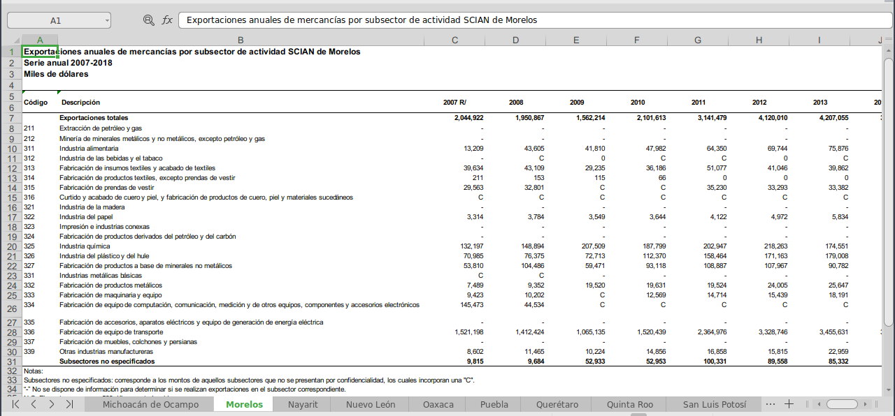
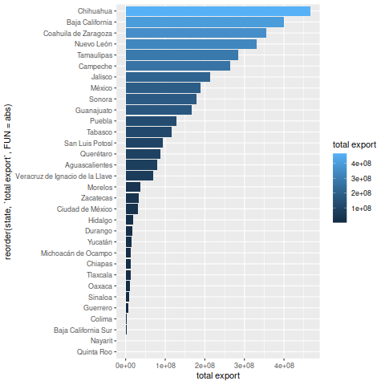

Total exportations of Mexico by State and Activity
Esta es la versión en español, que mas bien pretende ser un tutorial de un Analisis Exploratorio de Datos general, debido a la carencia de material en español para el desarrollo de análisis de datos y otras herramientas útiles para investigadores, estadísticos y estudiantes de habla hispana.
INTRODUCCIÓN
Los datos han sido tomados de la pagina oficial de INEGI. En formato de excel contienen información sobre exportaciones anuales por sector, en miles de dolares (USD).

Importando y ordenando (TIDYING) los datos
El archivo de excel ha sido separado en diferentes hojas de cálculo por estado. Cada hoja contiene la misma información: exportación anual de productos por sector (en miles de USD), donde cada columna contiene información sobre el año, de 2007 a 2017.
Lo primero va a ser la importación de datos desde excel en el formato de tibble.
## Nuestras librerías requeridas library(readxl) library(tidyverse) ## Importar desde Excel directamente ## Cada hoja es llamada como el estado estados <- excel_sheets('../ignore/EAEF_Entidad_Subsector.xlsx') ## Generación de los espacios para las columnas read_xlsx('../ignore/EAEF_Entidad_Subsector.xlsx', range = "A5:N5", sheet = 1, col_types = c("numeric", "text", rep("numeric", 12))) ## Creamos columna para estado exportation <- mutate(exportation, state = "Aguascalientes") ## Iteración en cada hoja de cálculo for (i in 1:length(estados)){ extracted <- read_xlsx('../ignore/EAEF_Entidad_Subsector.xlsx', range = "A7:N31", sheet = i, col_names = F, na = "-", col_types = c("numeric", "text", rep("numeric", 12))) colnames(extracted) <- colnames(exportation)[1:14] extracted <- mutate(extracted, state = estados[i]) exportation <- full_join(exportation, extracted) } ## Arreglar nombres de columnas con info extra colnames(exportation)[c(3, 14)] <- c("2007", "2018") exportation$`Código` <- parse_factor(as.character(exportation$`Código`)) ## Tidying data export1 <- exportation %>% pivot_longer(cols = `2007`:`2018`, names_to = "year", values_to = "USD", values_drop_na = T) %>% mutate(year = parse_double(year)) export <- export1 %>% pivot_wider(names_from = "Descripción", values_from = USD, id_cols = c("state", "year")) ## Guardar en CSV write_csv(export1, "exportations_activity_rows.csv") write_csv(export, "exportations_activity_cols.csv")
Hemos creado dos archivos CSV: exportations_activity_rows.csv
(creado de export1) contiene información por actividad en cada
fila; y exportations_activity_cols (de export) que mantiene
cada actividad en columnas. Cada una nos puede dar diferentes
opciones para analizar los datos y crear visualizaciones. Por eso
hemos decidido mantenerlas como archivos separados, así podemos
llamarlos cuando se requieran, y pueden ser descargadas y utilizadas
por cualquier usuario.
Analysis exploratorio (Exploratory Data Analysis, EDA)
Si empezamos una sesión nueva ahora podemos llamar directamente los archivos CSV.
library(tidyverse) library(cowplot) export.rows <- read_csv("../exportations_activity_rows.csv") export.cols <- read_csv("../exportations_activity_cols.csv")
El analysis fue hecho primordialmente en inglés. He decidido mantener el código en inglés por facilidad para mi por un lado, pero también por el beneficio de ser mas amigable con R en general, y de generar nombres mas cortos. Así pues, algunos valores se mantendrán en español y otros han sido traducidos para la manipulación de los datos. El siguiente bloque contiene la traducción de las actividades para generar nombres mas accesibles.
## Nombres en español en un vector colnames(export.cols) categorias <- colnames(export.cols)[3:27] ## Equivalentes en inglés activities.en <- c("Total", "Food", "Drinks and tobacco", "Textiles", "Textile products", "Tailoring", "Paper", "Chemistry", "Plastic", "Minerals based", "Metal industry", "Metal products", "Machinery", "Electronics", "Transport equipment", "Furniture", "Other manufactures", "Not specified", "Mining", "Leather", "Wood", "Printing", "Electricity", "Petroleum", "Petroleum products") ## Cambio de nombres colnames(export.cols)[3:27] <- activities.en
Para cambiar los valores en export.rows vamos a necesitar la
conversión de las expresiones en español a las mismas en inglés.
Aqui he utilizado herramientas de programación basada en funciones
(Functional Programing en inglés) para generar: primero la función
principal para traducir translating. Basado en esta, vamos llenando
los huecos, creamos equivalent para buscar la expresión equivalente
en cada idioma. Sin embargo, para que R los reconozca y pueda ejecutar
translate, necesitamos correr primero equivalent.
equivalent <- function(expression.es){ position <- match(expression.es, categorias) expression.en <- activities.en[position] expression.en } translate <- function(vector.es){ vector.en <- c() for (i in 1:length(vector.es)){ expression.es <- vector.es[i] expression.en <- equivalent(expression.es) ## "equivalent" toma expression.es y regresa el ## equivalente en ingles vector.en <- append(vector.en, expression.en) } vector.en } ## Probando nuestra nueva función equivalent("Impresión e industrias conexas")
[1] "Printing"
translate(categorias)
[1] "Total" "Food" "Drinks and tobacco" [4] "Textiles" "Textile products" "Tailoring" [7] "Paper" "Chemistry" "Plastic" [10] "Minerals based" "Metal industry" "Metal products" [13] "Machinery" "Electronics" "Transport equipment" [16] "Furniture" "Other manufactures" "Not specified" [19] "Mining" "Leather" "Wood" [22] "Printing" "Electricity" "Petroleum" [25] "Petroleum products"
## Creamos una nueva columna "Activity" con las expressiones en ingles (export.rows <- mutate(export.rows, Activity = translate(`Descripción`)))
# A tibble: 5,255 x 6
Código Descripción state year USD Activity
<dbl> <chr> <chr> <dbl> <dbl> <chr>
1 NA Exportaciones totales Aguascalientes 2007 4389841 Total
2 NA Exportaciones totales Aguascalientes 2008 4456893 Total
3 NA Exportaciones totales Aguascalientes 2009 3951108 Total
4 NA Exportaciones totales Aguascalientes 2010 5647929 Total
5 NA Exportaciones totales Aguascalientes 2011 6051640 Total
6 NA Exportaciones totales Aguascalientes 2012 6183782 Total
7 NA Exportaciones totales Aguascalientes 2013 6726207 Total
8 NA Exportaciones totales Aguascalientes 2014 8466007 Total
9 NA Exportaciones totales Aguascalientes 2015 8495445 Total
10 NA Exportaciones totales Aguascalientes 2016 7870962 Total
# … with 5,245 more rows
Ahora para empezar formlamente nuestro EDA, vamos a darle un vistazo
a los totales por estado, utilizando nuestra tabla export.cols
export.cols %>% group_by(state) %>% summarise(`total export` = sum(Total)) %>% arrange(desc(`total export`)) %>% print(n = Inf)
Error: object 'Total' not found
## Visualización export.cols %>% group_by(state) %>% summarise(`total export` = sum(Total)) %>% ggplot() + geom_bar(aes(y = `total export`, x = reorder(state, `total export`, FUN = abs), fill = `total export`), stat = 'identity') + coord_flip()

Ahora podemos hacer lo mismo pero por categoría, usando export.rows
export.rows %>% filter(Activity != "Total") %>% group_by(Activity) %>% summarise(Total = sum(USD)) %>% arrange(desc(Total)) %>% print(n = Inf)
# A tibble: 24 x 2 Activity Total <chr> <dbl> 1 Transport equipment 1226859499 2 Electronics 747959073 3 Petroleum 397933968 4 Electricity 208582754 5 Other manufactures 147915402 6 Machinery 136957553 7 Chemistry 133570853 8 Metal industry 117915995 9 Metal products 82889135 10 Food 81653585 11 Plastic 80126816 12 Mining 52953993 13 Not specified 51470567 14 Tailoring 43913959 15 Drinks and tobacco 31059501 16 Minerals based 30584505 17 Furniture 19883596 18 Petroleum products 14565067 19 Paper 13876523 20 Leather 9863853 21 Printing 6915538 22 Textiles 6260722 23 Textile products 4954252 24 Wood 1959275
export.rows %>% filter(Activity != "Total") %>% group_by(Activity) %>% summarise(Total = sum(USD)) %>% ggplot() + geom_bar(aes(y = Total, x = reorder(Activity, Total, FUN = abs), fill = Total), stat = 'identity') + coord_flip()
Por último, las exportaciones totales por año.
export.cols %>% group_by(year) %>% summarise(`total export` = sum(Total)) %>% print(n = Inf)
Error: object 'Total' not found
## Visualization export.rows %>% filter(Activity == "Total") %>% group_by(year) %>% summarise(Total = sum(USD)) %>% ggplot(aes(x = year, y = Total)) + geom_line() + geom_point()
## Per state export.rows %>% filter(Activity == "Total") %>% group_by(year, state) %>% summarise(Total = sum(USD)) %>% ggplot(aes(x = year, y = Total)) + geom_line(aes(colour = abbreviate(state, 6)))+ geom_point(aes(colour = abbreviate(state, 6)))
También nos gustaría ver si cada año fue el mismo estado o la misma actividad haciendo la mayor cantidad de dolares en exportaciones, o si esto cambió con el tiempo. Desafortunadamente nuestra gráfica con las exportaciones totales por año agrupada por estado es demasiado complicada para apreciar bien los detalles debido al gran número de estados. Probemos otro acercamiento:
## Principal estado en cada año export.cols %>% group_by(year) %>% filter(Total == max(Total)) %>% select(year, state, Total) %>% arrange(year)
Error: object 'Total' not found
## Activity export.rows %>% filter(Activity != "Total") %>% group_by(year) %>% filter(USD == max(USD)) %>% arrange(year) %>% select(Activity, state, year)
# A tibble: 12 x 3 # Groups: year [12] Activity state year <chr> <chr> <dbl> 1 Petroleum Campeche 2007 2 Petroleum Campeche 2008 3 Petroleum Campeche 2009 4 Petroleum Campeche 2010 5 Petroleum Campeche 2011 6 Petroleum Campeche 2012 7 Petroleum Campeche 2013 8 Transport equipment Coahuila de Zaragoza 2014 9 Transport equipment Coahuila de Zaragoza 2015 10 Transport equipment Coahuila de Zaragoza 2016 11 Transport equipment Coahuila de Zaragoza 2017 12 Transport equipment Coahuila de Zaragoza 2018